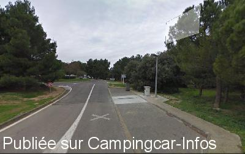

AA = Aire de services sur autoroute de :
A61 Narbonne=>Toulouse Aire des CORBIERES Nord
(N° 3)
Accès/adresse :
A61 Aire des Corbières Nord
11700 CAPENDU
11700 CAPENDU
Latitude : (Nord) 43.17898° Décimaux ou 43° 10′ 44′′
Longitude : (Est) 2.54252° Décimaux ou 2° 32′ 33′′
Tarif : Non connu
Services :


Autres informations :

Le 09/02/2016 par Aire services
Aucun commentaire pour le moment